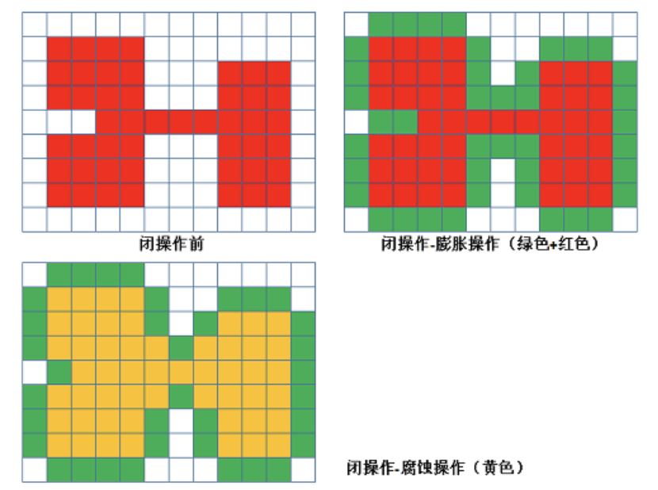

<!DOCTYPE HTML>
<html lang="zh-hans" >
    <head>
        <meta charset="UTF-8">
        <meta content="text/html; charset=utf-8" http-equiv="Content-Type">
        <title>3.2 形态学操作 · opencv</title>
        <meta http-equiv="X-UA-Compatible" content="IE=edge" />
        <meta name="description" content="">
        <meta name="generator" content="GitBook 3.2.3">
        
        
        
    
    <link rel="stylesheet" href="../gitbook/style.css">

    
            
                
                <link rel="stylesheet" href="../gitbook/gitbook-plugin-code/plugin.css">
                
            
                
                <link rel="stylesheet" href="../gitbook/gitbook-plugin-splitter/splitter.css">
                
            
                
                <link rel="stylesheet" href="../gitbook/gitbook-plugin-expandable-chapters/expandable-chapters.css">
                
            
                
                <link rel="stylesheet" href="../gitbook/gitbook-plugin-katex/katex.min.css">
                
            
                
                <link rel="stylesheet" href="../gitbook/gitbook-plugin-highlight/website.css">
                
            
                
                <link rel="stylesheet" href="../gitbook/gitbook-plugin-search/search.css">
                
            
                
                <link rel="stylesheet" href="../gitbook/gitbook-plugin-fontsettings/website.css">
                
            
        

    

    
        
    
        
    
        
    
        
    
        
    
        
    

        
    
    
    
    
    <meta name="HandheldFriendly" content="true"/>
    <meta name="viewport" content="width=device-width, initial-scale=1, user-scalable=no">
    <meta name="apple-mobile-web-app-capable" content="yes">
    <meta name="apple-mobile-web-app-status-bar-style" content="black">
    <link rel="apple-touch-icon-precomposed" sizes="152x152" href="../gitbook/images/apple-touch-icon-precomposed-152.png">
    <link rel="shortcut icon" href="../gitbook/images/favicon.ico" type="image/x-icon">

    
    <link rel="next" href="section2.html" />
    
    
    <link rel="prev" href="section0.html" />
    

    <script src="../gitbook/gitbook-plugin-graph/d3.min.js"></script>
    <script src="../gitbook/gitbook-plugin-graph/function-plot.js"></script>    

    
    <link rel="stylesheet" href="../gitbook/gitbook-plugin-chart/c3/c3.min.css">
    <script src="../gitbook/gitbook-plugin-chart/c3/d3.min.js"></script>
    <script src="../gitbook/gitbook-plugin-chart/c3/c3.min.js"></script>
    

    </head>
    <body>
        
<div class="book">
    <div class="book-summary">
        
            
<div id="book-search-input" role="search">
    <input type="text" placeholder="输入并搜索" />
</div>

            
                <nav role="navigation">
                


<ul class="summary">
    
    

    

    
        
        
    
        <li class="chapter " data-level="1.1" data-path="../">
            
                <a href="../">
            
                    
                    Introduction
            
                </a>
            

            
        </li>
    
        <li class="chapter " data-level="1.2" data-path="../OpenCV简介/ReadMe.html">
            
                <a href="../OpenCV简介/ReadMe.html">
            
                    
                    1. OpenCV简介
            
                </a>
            

            
            <ul class="articles">
                
    
        <li class="chapter " data-level="1.2.1" data-path="../OpenCV简介/section0.html">
            
                <a href="../OpenCV简介/section0.html">
            
                    
                    1.1 图像处理简介
            
                </a>
            

            
        </li>
    
        <li class="chapter " data-level="1.2.2" data-path="../OpenCV简介/section1.html">
            
                <a href="../OpenCV简介/section1.html">
            
                    
                    1.2 OpenCV简介及安装方法
            
                </a>
            

            
        </li>
    
        <li class="chapter " data-level="1.2.3" data-path="../OpenCV简介/section2.html">
            
                <a href="../OpenCV简介/section2.html">
            
                    
                    1.3 OpenCV的模块
            
                </a>
            

            
        </li>
    

            </ul>
            
        </li>
    
        <li class="chapter " data-level="1.3" data-path="../OpenCV基本操作/ReadMe.html">
            
                <a href="../OpenCV基本操作/ReadMe.html">
            
                    
                    2 OpenCV基本操作
            
                </a>
            

            
            <ul class="articles">
                
    
        <li class="chapter " data-level="1.3.1" data-path="../OpenCV基本操作/section0.html">
            
                <a href="../OpenCV基本操作/section0.html">
            
                    
                    2.1 图像的基础操作
            
                </a>
            

            
        </li>
    
        <li class="chapter " data-level="1.3.2" data-path="../OpenCV基本操作/section1.html">
            
                <a href="../OpenCV基本操作/section1.html">
            
                    
                    2.2 算数操作
            
                </a>
            

            
        </li>
    

            </ul>
            
        </li>
    
        <li class="chapter " data-level="1.4" data-path="ReadMe.html">
            
                <a href="ReadMe.html">
            
                    
                    3 OpenCV图像处理
            
                </a>
            

            
            <ul class="articles">
                
    
        <li class="chapter " data-level="1.4.1" data-path="section0.html">
            
                <a href="section0.html">
            
                    
                    3.1 几何变换
            
                </a>
            

            
        </li>
    
        <li class="chapter active" data-level="1.4.2" data-path="section1.html">
            
                <a href="section1.html">
            
                    
                    3.2 形态学操作
            
                </a>
            

            
        </li>
    
        <li class="chapter " data-level="1.4.3" data-path="section2.html">
            
                <a href="section2.html">
            
                    
                    3.3 图像平滑
            
                </a>
            

            
        </li>
    
        <li class="chapter " data-level="1.4.4" data-path="section3.html">
            
                <a href="section3.html">
            
                    
                    3.4 直方图
            
                </a>
            

            
        </li>
    
        <li class="chapter " data-level="1.4.5" data-path="section4.html">
            
                <a href="section4.html">
            
                    
                    3.5 边缘检测
            
                </a>
            

            
        </li>
    
        <li class="chapter " data-level="1.4.6" data-path="section5.html">
            
                <a href="section5.html">
            
                    
                    3.6 模版匹配和霍夫变换
            
                </a>
            

            
        </li>
    

            </ul>
            
        </li>
    
        <li class="chapter " data-level="1.5" data-path="../图像特征提取与描述/ReadMe.html">
            
                <a href="../图像特征提取与描述/ReadMe.html">
            
                    
                    4 图像特征提取与描述
            
                </a>
            

            
            <ul class="articles">
                
    
        <li class="chapter " data-level="1.5.1" data-path="../图像特征提取与描述/section0.html">
            
                <a href="../图像特征提取与描述/section0.html">
            
                    
                    4.1 角点特征
            
                </a>
            

            
        </li>
    
        <li class="chapter " data-level="1.5.2" data-path="../图像特征提取与描述/section1.html">
            
                <a href="../图像特征提取与描述/section1.html">
            
                    
                    4.2 Harris和Shi-Tomas算法
            
                </a>
            

            
        </li>
    
        <li class="chapter " data-level="1.5.3" data-path="../图像特征提取与描述/section2.html">
            
                <a href="../图像特征提取与描述/section2.html">
            
                    
                    4.3 SIFT/SURF算法
            
                </a>
            

            
        </li>
    

            </ul>
            
        </li>
    
        <li class="chapter " data-level="1.6" data-path="../视频操作/ReadMe.html">
            
                <a href="../视频操作/ReadMe.html">
            
                    
                    5 视频操作
            
                </a>
            

            
            <ul class="articles">
                
    
        <li class="chapter " data-level="1.6.1" data-path="../视频操作/section0.html">
            
                <a href="../视频操作/section0.html">
            
                    
                    5.1 视频读写
            
                </a>
            

            
        </li>
    
        <li class="chapter " data-level="1.6.2" data-path="../视频操作/section1.html">
            
                <a href="../视频操作/section1.html">
            
                    
                    5.2 视频追踪
            
                </a>
            

            
        </li>
    

            </ul>
            
        </li>
    
        <li class="chapter " data-level="1.7" data-path="../案例/ReadMe.html">
            
                <a href="../案例/ReadMe.html">
            
                    
                    6 案例:人脸案例
            
                </a>
            

            
        </li>
    

    

    <li class="divider"></li>

    <li>
        <a href="https://www.gitbook.com" target="blank" class="gitbook-link">
            本书使用 GitBook 发布
        </a>
    </li>
</ul>


                </nav>
            
        
    </div>

    <div class="book-body">
        
            <div class="body-inner">
                
                    

<div class="book-header" role="navigation">
    

    <!-- Title -->
    <h1>
        <i class="fa fa-circle-o-notch fa-spin"></i>
        <a href=".." >3.2 形态学操作</a>
    </h1>
</div>


                    <div class="page-wrapper" tabindex="-1" role="main">
                        <div class="page-inner">
                            
<div id="book-search-results">
    <div class="search-noresults">
    
                                <section class="normal markdown-section">
                                
                                <h1 id="&#x5F62;&#x6001;&#x5B66;&#x64CD;&#x4F5C;">&#x5F62;&#x6001;&#x5B66;&#x64CD;&#x4F5C;</h1>
<p><strong>&#x5B66;&#x4E60;&#x76EE;&#x6807;</strong></p>
<ul>
<li><p>&#x7406;&#x89E3;&#x56FE;&#x50CF;&#x7684;&#x90BB;&#x57DF;&#xFF0C;&#x8FDE;&#x901A;&#x6027;</p>
</li>
<li><p>&#x4E86;&#x89E3;&#x4E0D;&#x540C;&#x7684;&#x5F62;&#x6001;&#x5B66;&#x64CD;&#x4F5C;&#xFF1A;&#x8150;&#x8680;&#xFF0C;&#x81A8;&#x80C0;&#xFF0C;&#x5F00;&#x95ED;&#x8FD0;&#x7B97;&#xFF0C;&#x793C;&#x5E3D;&#x548C;&#x9ED1;&#x5E3D;&#x7B49;&#xFF0C;&#x53CA;&#x5176;&#x4E0D;&#x540C;&#x64CD;&#x4F5C;&#x4E4B;&#x95F4;&#x7684;&#x5173;&#x7CFB;</p>
</li>
</ul>
<hr>
<h1 id="1-&#x8FDE;&#x901A;&#x6027;">1 &#x8FDE;&#x901A;&#x6027;</h1>
<p>&#x5728;&#x56FE;&#x50CF;&#x4E2D;&#xFF0C;&#x6700;&#x5C0F;&#x7684;&#x5355;&#x4F4D;&#x662F;&#x50CF;&#x7D20;&#xFF0C;&#x6BCF;&#x4E2A;&#x50CF;&#x7D20;&#x5468;&#x56F4;&#x6709;8&#x4E2A;&#x90BB;&#x63A5;&#x50CF;&#x7D20;&#xFF0C;&#x5E38;&#x89C1;&#x7684;&#x90BB;&#x63A5;&#x5173;&#x7CFB;&#x6709;3&#x79CD;&#xFF1A;4&#x90BB;&#x63A5;&#x3001;8&#x90BB;&#x63A5;&#x548C;D&#x90BB;&#x63A5;&#x3002;&#x5206;&#x522B;&#x5982;&#x4E0B;&#x56FE;&#x6240;&#x793A;&#xFF1A;</p>
<p></p>
<ul>
<li><p>4&#x90BB;&#x63A5;&#xFF1A;&#x50CF;&#x7D20;p(x,y)&#x7684;4&#x90BB;&#x57DF;&#x662F;&#xFF1A;(x+1,y)&#xFF1B;(x-1,y)&#xFF1B;(x,y+1)&#xFF1B;(x,y-1)&#xFF0C;&#x7528;<span class="katex"><span class="katex-mathml"><math><semantics><mrow><msub><mi>N</mi><mn>4</mn></msub><mo>(</mo><mi>p</mi><mo>)</mo></mrow><annotation encoding="application/x-tex">N_4(p)</annotation></semantics></math></span><span class="katex-html" aria-hidden="true"><span class="strut" style="height:0.75em;"></span><span class="strut bottom" style="height:1em;vertical-align:-0.25em;"></span><span class="base textstyle uncramped"><span class="mord"><span class="mord mathit" style="margin-right:0.10903em;">N</span><span class="msupsub"><span class="vlist"><span style="top:0.15em;margin-right:0.05em;margin-left:-0.10903em;"><span class="fontsize-ensurer reset-size5 size5"><span style="font-size:0em;">&#x200B;</span></span><span class="reset-textstyle scriptstyle cramped mtight"><span class="mord mathrm mtight">4</span></span></span><span class="baseline-fix"><span class="fontsize-ensurer reset-size5 size5"><span style="font-size:0em;">&#x200B;</span></span>&#x200B;</span></span></span></span><span class="mopen">(</span><span class="mord mathit">p</span><span class="mclose">)</span></span></span></span>&#x8868;&#x793A;&#x50CF;&#x7D20;p&#x7684;4&#x90BB;&#x63A5;</p>
</li>
<li><p>D&#x90BB;&#x63A5;&#xFF1A;&#x50CF;&#x7D20;p(x,y)&#x7684;D&#x90BB;&#x57DF;&#x662F;&#xFF1A;&#x5BF9;&#x89D2;&#x4E0A;&#x7684;&#x70B9; (x+1,y+1)&#xFF1B;(x+1,y-1)&#xFF1B;(x-1,y+1)&#xFF1B;(x-1,y-1)&#xFF0C;&#x7528;<span class="katex"><span class="katex-mathml"><math><semantics><mrow><msub><mi>N</mi><mi>D</mi></msub><mo>(</mo><mi>p</mi><mo>)</mo></mrow><annotation encoding="application/x-tex">N_D(p)</annotation></semantics></math></span><span class="katex-html" aria-hidden="true"><span class="strut" style="height:0.75em;"></span><span class="strut bottom" style="height:1em;vertical-align:-0.25em;"></span><span class="base textstyle uncramped"><span class="mord"><span class="mord mathit" style="margin-right:0.10903em;">N</span><span class="msupsub"><span class="vlist"><span style="top:0.15em;margin-right:0.05em;margin-left:-0.10903em;"><span class="fontsize-ensurer reset-size5 size5"><span style="font-size:0em;">&#x200B;</span></span><span class="reset-textstyle scriptstyle cramped mtight"><span class="mord mathit mtight" style="margin-right:0.02778em;">D</span></span></span><span class="baseline-fix"><span class="fontsize-ensurer reset-size5 size5"><span style="font-size:0em;">&#x200B;</span></span>&#x200B;</span></span></span></span><span class="mopen">(</span><span class="mord mathit">p</span><span class="mclose">)</span></span></span></span>&#x8868;&#x793A;&#x50CF;&#x7D20;p&#x7684;D&#x90BB;&#x57DF;</p>
</li>
<li>8&#x90BB;&#x63A5;&#xFF1A;&#x50CF;&#x7D20;p(x,y)&#x7684;8&#x90BB;&#x57DF;&#x662F;&#xFF1A; 4&#x90BB;&#x57DF;&#x7684;&#x70B9; &#xFF0B; D&#x90BB;&#x57DF;&#x7684;&#x70B9;&#xFF0C;&#x7528;<span class="katex"><span class="katex-mathml"><math><semantics><mrow><msub><mi>N</mi><mrow><mn>8</mn></mrow></msub><mo>(</mo><mi>p</mi><mo>)</mo></mrow><annotation encoding="application/x-tex">N_{8}(p)</annotation></semantics></math></span><span class="katex-html" aria-hidden="true"><span class="strut" style="height:0.75em;"></span><span class="strut bottom" style="height:1em;vertical-align:-0.25em;"></span><span class="base textstyle uncramped"><span class="mord"><span class="mord mathit" style="margin-right:0.10903em;">N</span><span class="msupsub"><span class="vlist"><span style="top:0.15em;margin-right:0.05em;margin-left:-0.10903em;"><span class="fontsize-ensurer reset-size5 size5"><span style="font-size:0em;">&#x200B;</span></span><span class="reset-textstyle scriptstyle cramped mtight"><span class="mord scriptstyle cramped mtight"><span class="mord mathrm mtight">8</span></span></span></span><span class="baseline-fix"><span class="fontsize-ensurer reset-size5 size5"><span style="font-size:0em;">&#x200B;</span></span>&#x200B;</span></span></span></span><span class="mopen">(</span><span class="mord mathit">p</span><span class="mclose">)</span></span></span></span>&#x8868;&#x793A;&#x50CF;&#x7D20;p&#x7684;8&#x90BB;&#x57DF;</li>
</ul>
<p><strong>&#x8FDE;&#x901A;&#x6027;</strong>&#x662F;&#x63CF;&#x8FF0;&#x533A;&#x57DF;&#x548C;&#x8FB9;&#x754C;&#x7684;&#x91CD;&#x8981;&#x6982;&#x5FF5;&#xFF0C;&#x4E24;&#x4E2A;&#x50CF;&#x7D20;&#x8FDE;&#x901A;&#x7684;&#x4E24;&#x4E2A;&#x5FC5;&#x8981;&#x6761;&#x4EF6;&#x662F;&#xFF1A;</p>
<ol>
<li><p>&#x4E24;&#x4E2A;&#x50CF;&#x7D20;&#x7684;&#x4F4D;&#x7F6E;&#x662F;&#x5426;&#x76F8;&#x90BB;</p>
</li>
<li><p>&#x4E24;&#x4E2A;&#x50CF;&#x7D20;&#x7684;&#x7070;&#x5EA6;&#x503C;&#x662F;&#x5426;&#x6EE1;&#x8DB3;&#x7279;&#x5B9A;&#x7684;&#x76F8; &#x4F3C;&#x6027;&#x51C6;&#x5219;&#xFF08;&#x6216;&#x8005;&#x662F;&#x5426;&#x76F8;&#x7B49;</p>
</li>
</ol>
<p>&#x6839;&#x636E;&#x8FDE;&#x901A;&#x6027;&#x7684;&#x5B9A;&#x4E49;&#xFF0C;&#x6709;4&#x8054;&#x901A;&#x3001;8&#x8054;&#x901A;&#x548C;m&#x8054;&#x901A;&#x4E09;&#x79CD;&#x3002;</p>
<ul>
<li><p>4&#x8054;&#x901A;&#xFF1A;&#x5BF9;&#x4E8E;&#x5177;&#x6709;&#x503C;<span class="katex"><span class="katex-mathml"><math><semantics><mrow><mi>V</mi></mrow><annotation encoding="application/x-tex">V</annotation></semantics></math></span><span class="katex-html" aria-hidden="true"><span class="strut" style="height:0.68333em;"></span><span class="strut bottom" style="height:0.68333em;vertical-align:0em;"></span><span class="base textstyle uncramped"><span class="mord mathit" style="margin-right:0.22222em;">V</span></span></span></span>&#x7684;&#x50CF;&#x7D20;<span class="katex"><span class="katex-mathml"><math><semantics><mrow><mi>p</mi></mrow><annotation encoding="application/x-tex">p</annotation></semantics></math></span><span class="katex-html" aria-hidden="true"><span class="strut" style="height:0.43056em;"></span><span class="strut bottom" style="height:0.625em;vertical-align:-0.19444em;"></span><span class="base textstyle uncramped"><span class="mord mathit">p</span></span></span></span>&#x548C;<span class="katex"><span class="katex-mathml"><math><semantics><mrow><mi>q</mi></mrow><annotation encoding="application/x-tex">q</annotation></semantics></math></span><span class="katex-html" aria-hidden="true"><span class="strut" style="height:0.43056em;"></span><span class="strut bottom" style="height:0.625em;vertical-align:-0.19444em;"></span><span class="base textstyle uncramped"><span class="mord mathit" style="margin-right:0.03588em;">q</span></span></span></span>&#xFF0C;&#x5982;&#x679C;<span class="katex"><span class="katex-mathml"><math><semantics><mrow><mi>q</mi></mrow><annotation encoding="application/x-tex">q</annotation></semantics></math></span><span class="katex-html" aria-hidden="true"><span class="strut" style="height:0.43056em;"></span><span class="strut bottom" style="height:0.625em;vertical-align:-0.19444em;"></span><span class="base textstyle uncramped"><span class="mord mathit" style="margin-right:0.03588em;">q</span></span></span></span>&#x5728;&#x96C6;&#x5408;<span class="katex"><span class="katex-mathml"><math><semantics><mrow><msub><mi>N</mi><mn>4</mn></msub><mo>(</mo><mi>p</mi><mo>)</mo></mrow><annotation encoding="application/x-tex">N_4(p)</annotation></semantics></math></span><span class="katex-html" aria-hidden="true"><span class="strut" style="height:0.75em;"></span><span class="strut bottom" style="height:1em;vertical-align:-0.25em;"></span><span class="base textstyle uncramped"><span class="mord"><span class="mord mathit" style="margin-right:0.10903em;">N</span><span class="msupsub"><span class="vlist"><span style="top:0.15em;margin-right:0.05em;margin-left:-0.10903em;"><span class="fontsize-ensurer reset-size5 size5"><span style="font-size:0em;">&#x200B;</span></span><span class="reset-textstyle scriptstyle cramped mtight"><span class="mord mathrm mtight">4</span></span></span><span class="baseline-fix"><span class="fontsize-ensurer reset-size5 size5"><span style="font-size:0em;">&#x200B;</span></span>&#x200B;</span></span></span></span><span class="mopen">(</span><span class="mord mathit">p</span><span class="mclose">)</span></span></span></span>&#x4E2D;&#xFF0C;&#x5219;&#x79F0;&#x8FD9;&#x4E24;&#x4E2A;&#x50CF;&#x7D20;&#x662F;4&#x8FDE;&#x901A;&#x3002;</p>
</li>
<li><p>8&#x8054;&#x901A;&#xFF1A;&#x5BF9;&#x4E8E;&#x5177;&#x6709;&#x503C;<span class="katex"><span class="katex-mathml"><math><semantics><mrow><mi>V</mi></mrow><annotation encoding="application/x-tex">V</annotation></semantics></math></span><span class="katex-html" aria-hidden="true"><span class="strut" style="height:0.68333em;"></span><span class="strut bottom" style="height:0.68333em;vertical-align:0em;"></span><span class="base textstyle uncramped"><span class="mord mathit" style="margin-right:0.22222em;">V</span></span></span></span>&#x7684;&#x50CF;&#x7D20;<span class="katex"><span class="katex-mathml"><math><semantics><mrow><mi>p</mi></mrow><annotation encoding="application/x-tex">p</annotation></semantics></math></span><span class="katex-html" aria-hidden="true"><span class="strut" style="height:0.43056em;"></span><span class="strut bottom" style="height:0.625em;vertical-align:-0.19444em;"></span><span class="base textstyle uncramped"><span class="mord mathit">p</span></span></span></span>&#x548C;<span class="katex"><span class="katex-mathml"><math><semantics><mrow><mi>q</mi></mrow><annotation encoding="application/x-tex">q</annotation></semantics></math></span><span class="katex-html" aria-hidden="true"><span class="strut" style="height:0.43056em;"></span><span class="strut bottom" style="height:0.625em;vertical-align:-0.19444em;"></span><span class="base textstyle uncramped"><span class="mord mathit" style="margin-right:0.03588em;">q</span></span></span></span>&#xFF0C;&#x5982;&#x679C;<span class="katex"><span class="katex-mathml"><math><semantics><mrow><mi>q</mi></mrow><annotation encoding="application/x-tex">q</annotation></semantics></math></span><span class="katex-html" aria-hidden="true"><span class="strut" style="height:0.43056em;"></span><span class="strut bottom" style="height:0.625em;vertical-align:-0.19444em;"></span><span class="base textstyle uncramped"><span class="mord mathit" style="margin-right:0.03588em;">q</span></span></span></span>&#x5728;&#x96C6;
&#x5408;<span class="katex"><span class="katex-mathml"><math><semantics><mrow><msub><mi>N</mi><mn>8</mn></msub><mo>(</mo><mi>p</mi><mo>)</mo></mrow><annotation encoding="application/x-tex">N_8(p)</annotation></semantics></math></span><span class="katex-html" aria-hidden="true"><span class="strut" style="height:0.75em;"></span><span class="strut bottom" style="height:1em;vertical-align:-0.25em;"></span><span class="base textstyle uncramped"><span class="mord"><span class="mord mathit" style="margin-right:0.10903em;">N</span><span class="msupsub"><span class="vlist"><span style="top:0.15em;margin-right:0.05em;margin-left:-0.10903em;"><span class="fontsize-ensurer reset-size5 size5"><span style="font-size:0em;">&#x200B;</span></span><span class="reset-textstyle scriptstyle cramped mtight"><span class="mord mathrm mtight">8</span></span></span><span class="baseline-fix"><span class="fontsize-ensurer reset-size5 size5"><span style="font-size:0em;">&#x200B;</span></span>&#x200B;</span></span></span></span><span class="mopen">(</span><span class="mord mathit">p</span><span class="mclose">)</span></span></span></span>&#x4E2D;&#xFF0C;&#x5219;&#x79F0;&#x8FD9;&#x4E24;&#x4E2A;&#x50CF;&#x7D20;&#x662F;8&#x8FDE;&#x901A;&#x3002;</p>
<p></p>
</li>
<li><p>&#x5BF9;&#x4E8E;&#x5177;&#x6709;&#x503C;<span class="katex"><span class="katex-mathml"><math><semantics><mrow><mi>V</mi></mrow><annotation encoding="application/x-tex">V</annotation></semantics></math></span><span class="katex-html" aria-hidden="true"><span class="strut" style="height:0.68333em;"></span><span class="strut bottom" style="height:0.68333em;vertical-align:0em;"></span><span class="base textstyle uncramped"><span class="mord mathit" style="margin-right:0.22222em;">V</span></span></span></span>&#x7684;&#x50CF;&#x7D20;<span class="katex"><span class="katex-mathml"><math><semantics><mrow><mi>p</mi></mrow><annotation encoding="application/x-tex">p</annotation></semantics></math></span><span class="katex-html" aria-hidden="true"><span class="strut" style="height:0.43056em;"></span><span class="strut bottom" style="height:0.625em;vertical-align:-0.19444em;"></span><span class="base textstyle uncramped"><span class="mord mathit">p</span></span></span></span>&#x548C;<span class="katex"><span class="katex-mathml"><math><semantics><mrow><mi>q</mi></mrow><annotation encoding="application/x-tex">q</annotation></semantics></math></span><span class="katex-html" aria-hidden="true"><span class="strut" style="height:0.43056em;"></span><span class="strut bottom" style="height:0.625em;vertical-align:-0.19444em;"></span><span class="base textstyle uncramped"><span class="mord mathit" style="margin-right:0.03588em;">q</span></span></span></span>&#xFF0C;&#x5982;&#x679C;:</p>
<ol>
<li><p><span class="katex"><span class="katex-mathml"><math><semantics><mrow><mi>q</mi></mrow><annotation encoding="application/x-tex">q</annotation></semantics></math></span><span class="katex-html" aria-hidden="true"><span class="strut" style="height:0.43056em;"></span><span class="strut bottom" style="height:0.625em;vertical-align:-0.19444em;"></span><span class="base textstyle uncramped"><span class="mord mathit" style="margin-right:0.03588em;">q</span></span></span></span>&#x5728;&#x96C6;&#x5408;<span class="katex"><span class="katex-mathml"><math><semantics><mrow><msub><mi>N</mi><mn>4</mn></msub><mo>(</mo><mi>p</mi><mo>)</mo></mrow><annotation encoding="application/x-tex">N_4(p)</annotation></semantics></math></span><span class="katex-html" aria-hidden="true"><span class="strut" style="height:0.75em;"></span><span class="strut bottom" style="height:1em;vertical-align:-0.25em;"></span><span class="base textstyle uncramped"><span class="mord"><span class="mord mathit" style="margin-right:0.10903em;">N</span><span class="msupsub"><span class="vlist"><span style="top:0.15em;margin-right:0.05em;margin-left:-0.10903em;"><span class="fontsize-ensurer reset-size5 size5"><span style="font-size:0em;">&#x200B;</span></span><span class="reset-textstyle scriptstyle cramped mtight"><span class="mord mathrm mtight">4</span></span></span><span class="baseline-fix"><span class="fontsize-ensurer reset-size5 size5"><span style="font-size:0em;">&#x200B;</span></span>&#x200B;</span></span></span></span><span class="mopen">(</span><span class="mord mathit">p</span><span class="mclose">)</span></span></span></span>&#x4E2D;&#xFF0C;&#x6216;</p>
</li>
<li><p><span class="katex"><span class="katex-mathml"><math><semantics><mrow><mi>q</mi></mrow><annotation encoding="application/x-tex">q</annotation></semantics></math></span><span class="katex-html" aria-hidden="true"><span class="strut" style="height:0.43056em;"></span><span class="strut bottom" style="height:0.625em;vertical-align:-0.19444em;"></span><span class="base textstyle uncramped"><span class="mord mathit" style="margin-right:0.03588em;">q</span></span></span></span>&#x5728;&#x96C6;&#x5408;<span class="katex"><span class="katex-mathml"><math><semantics><mrow><msub><mi>N</mi><mi>D</mi></msub><mo>(</mo><mi>p</mi><mo>)</mo></mrow><annotation encoding="application/x-tex">N_D(p)</annotation></semantics></math></span><span class="katex-html" aria-hidden="true"><span class="strut" style="height:0.75em;"></span><span class="strut bottom" style="height:1em;vertical-align:-0.25em;"></span><span class="base textstyle uncramped"><span class="mord"><span class="mord mathit" style="margin-right:0.10903em;">N</span><span class="msupsub"><span class="vlist"><span style="top:0.15em;margin-right:0.05em;margin-left:-0.10903em;"><span class="fontsize-ensurer reset-size5 size5"><span style="font-size:0em;">&#x200B;</span></span><span class="reset-textstyle scriptstyle cramped mtight"><span class="mord mathit mtight" style="margin-right:0.02778em;">D</span></span></span><span class="baseline-fix"><span class="fontsize-ensurer reset-size5 size5"><span style="font-size:0em;">&#x200B;</span></span>&#x200B;</span></span></span></span><span class="mopen">(</span><span class="mord mathit">p</span><span class="mclose">)</span></span></span></span>&#x4E2D;&#xFF0C;&#x5E76;&#x4E14;<span class="katex"><span class="katex-mathml"><math><semantics><mrow><msub><mi>N</mi><mn>4</mn></msub><mo>(</mo><mi>p</mi><mo>)</mo></mrow><annotation encoding="application/x-tex">N_4(p)</annotation></semantics></math></span><span class="katex-html" aria-hidden="true"><span class="strut" style="height:0.75em;"></span><span class="strut bottom" style="height:1em;vertical-align:-0.25em;"></span><span class="base textstyle uncramped"><span class="mord"><span class="mord mathit" style="margin-right:0.10903em;">N</span><span class="msupsub"><span class="vlist"><span style="top:0.15em;margin-right:0.05em;margin-left:-0.10903em;"><span class="fontsize-ensurer reset-size5 size5"><span style="font-size:0em;">&#x200B;</span></span><span class="reset-textstyle scriptstyle cramped mtight"><span class="mord mathrm mtight">4</span></span></span><span class="baseline-fix"><span class="fontsize-ensurer reset-size5 size5"><span style="font-size:0em;">&#x200B;</span></span>&#x200B;</span></span></span></span><span class="mopen">(</span><span class="mord mathit">p</span><span class="mclose">)</span></span></span></span>&#x4E0E;<span class="katex"><span class="katex-mathml"><math><semantics><mrow><msub><mi>N</mi><mn>4</mn></msub><mo>(</mo><mi>q</mi><mo>)</mo></mrow><annotation encoding="application/x-tex">N_4(q) </annotation></semantics></math></span><span class="katex-html" aria-hidden="true"><span class="strut" style="height:0.75em;"></span><span class="strut bottom" style="height:1em;vertical-align:-0.25em;"></span><span class="base textstyle uncramped"><span class="mord"><span class="mord mathit" style="margin-right:0.10903em;">N</span><span class="msupsub"><span class="vlist"><span style="top:0.15em;margin-right:0.05em;margin-left:-0.10903em;"><span class="fontsize-ensurer reset-size5 size5"><span style="font-size:0em;">&#x200B;</span></span><span class="reset-textstyle scriptstyle cramped mtight"><span class="mord mathrm mtight">4</span></span></span><span class="baseline-fix"><span class="fontsize-ensurer reset-size5 size5"><span style="font-size:0em;">&#x200B;</span></span>&#x200B;</span></span></span></span><span class="mopen">(</span><span class="mord mathit" style="margin-right:0.03588em;">q</span><span class="mclose">)</span></span></span></span>&#x7684;&#x4EA4;&#x96C6;&#x4E3A;&#x7A7A;&#xFF08;&#x6CA1;&#x6709;&#x503C;<span class="katex"><span class="katex-mathml"><math><semantics><mrow><mi>V</mi></mrow><annotation encoding="application/x-tex">V</annotation></semantics></math></span><span class="katex-html" aria-hidden="true"><span class="strut" style="height:0.68333em;"></span><span class="strut bottom" style="height:0.68333em;vertical-align:0em;"></span><span class="base textstyle uncramped"><span class="mord mathit" style="margin-right:0.22222em;">V</span></span></span></span>&#x7684;&#x50CF;&#x7D20;&#xFF09; </p>
</li>
</ol>
<p>&#x5219;&#x79F0;&#x8FD9;&#x4E24;&#x4E2A;&#x50CF;&#x7D20;&#x662F;<span class="katex"><span class="katex-mathml"><math><semantics><mrow><mi>m</mi></mrow><annotation encoding="application/x-tex">m</annotation></semantics></math></span><span class="katex-html" aria-hidden="true"><span class="strut" style="height:0.43056em;"></span><span class="strut bottom" style="height:0.43056em;vertical-align:0em;"></span><span class="base textstyle uncramped"><span class="mord mathit">m</span></span></span></span>&#x8FDE;&#x901A;&#x7684;&#xFF0C;&#x5373;4&#x8FDE;&#x901A;&#x548C;D&#x8FDE;&#x901A;&#x7684;&#x6DF7;&#x5408;&#x8FDE;&#x901A;&#x3002;</p>
<p></p>
</li>
</ul>
<h1 id="2-&#x5F62;&#x6001;&#x5B66;&#x64CD;&#x4F5C;">2 &#x5F62;&#x6001;&#x5B66;&#x64CD;&#x4F5C;</h1>
<p>&#x5F62;&#x6001;&#x5B66;&#x8F6C;&#x6362;&#x662F;&#x57FA;&#x4E8E;&#x56FE;&#x50CF;&#x5F62;&#x72B6;&#x7684;&#x4E00;&#x4E9B;&#x7B80;&#x5355;&#x64CD;&#x4F5C;&#x3002;&#x5B83;&#x901A;&#x5E38;&#x5728;&#x4E8C;&#x8FDB;&#x5236;&#x56FE;&#x50CF;&#x4E0A;&#x6267;&#x884C;&#x3002;&#x8150;&#x8680;&#x548C;&#x81A8;&#x80C0;&#x662F;&#x4E24;&#x4E2A;&#x57FA;&#x672C;&#x7684;&#x5F62;&#x6001;&#x5B66;&#x8FD0;&#x7B97;&#x7B26;&#x3002;&#x7136;&#x540E;&#x5B83;&#x7684;&#x53D8;&#x4F53;&#x5F62;&#x5F0F;&#x5982;&#x5F00;&#x8FD0;&#x7B97;&#xFF0C;&#x95ED;&#x8FD0;&#x7B97;&#xFF0C;&#x793C;&#x5E3D;&#x9ED1;&#x5E3D;&#x7B49;&#x3002;</p>
<h2 id="21-&#x8150;&#x8680;&#x548C;&#x81A8;&#x80C0;">2.1 &#x8150;&#x8680;&#x548C;&#x81A8;&#x80C0;</h2>
<p>&#x8150;&#x8680;&#x548C;&#x81A8;&#x80C0;&#x662F;&#x6700;&#x57FA;&#x672C;&#x7684;&#x5F62;&#x6001;&#x5B66;&#x64CD;&#x4F5C;&#xFF0C;&#x8150;&#x8680;&#x548C;&#x81A8;&#x80C0;&#x90FD;&#x662F;&#x9488;&#x5BF9;&#x767D;&#x8272;&#x90E8;&#x5206;&#xFF08;&#x9AD8;&#x4EAE;&#x90E8;&#x5206;&#xFF09;&#x800C;&#x8A00;&#x7684;&#x3002;</p>
<p>&#x81A8;&#x80C0;&#x5C31;&#x662F;&#x4F7F;&#x56FE;&#x50CF;&#x4E2D;&#x9AD8;&#x4EAE;&#x90E8;&#x5206;&#x6269;&#x5F20;&#xFF0C;&#x6548;&#x679C;&#x56FE;&#x62E5;&#x6709;&#x6BD4;&#x539F;&#x56FE;&#x66F4;&#x5927;&#x7684;&#x9AD8;&#x4EAE;&#x533A;&#x57DF;&#xFF1B;&#x8150;&#x8680;&#x662F;&#x539F;&#x56FE;&#x4E2D;&#x7684;&#x9AD8;&#x4EAE;&#x533A;&#x57DF;&#x88AB;&#x8695;&#x98DF;&#xFF0C;&#x6548;&#x679C;&#x56FE;&#x62E5;&#x6709;&#x6BD4;&#x539F;&#x56FE;&#x66F4;&#x5C0F;&#x7684;&#x9AD8;&#x4EAE;&#x533A;&#x57DF;&#x3002;&#x81A8;&#x80C0;&#x662F;&#x6C42;&#x5C40;&#x90E8;&#x6700;&#x5927;&#x503C;&#x7684;&#x64CD;&#x4F5C;&#xFF0C;&#x8150;&#x8680;&#x662F;&#x6C42;&#x5C40;&#x90E8;&#x6700;&#x5C0F;&#x503C;&#x7684;&#x64CD;&#x4F5C;&#x3002;</p>
<ol>
<li><p><strong>&#x8150;&#x8680;</strong></p>
<p> &#x5177;&#x4F53;&#x64CD;&#x4F5C;&#x662F;&#xFF1A;&#x7528;&#x4E00;&#x4E2A;&#x7ED3;&#x6784;&#x5143;&#x7D20;&#x626B;&#x63CF;&#x56FE;&#x50CF;&#x4E2D;&#x7684;&#x6BCF;&#x4E00;&#x4E2A;&#x50CF;&#x7D20;&#xFF0C;&#x7528;&#x7ED3;&#x6784;&#x5143;&#x7D20;&#x4E2D;&#x7684;&#x6BCF;&#x4E00;&#x4E2A;&#x50CF;&#x7D20;&#x4E0E;&#x5176;&#x8986;&#x76D6;&#x7684;&#x50CF;&#x7D20;&#x505A;&#x201C;&#x4E0E;&#x201D;&#x64CD;&#x4F5C;&#xFF0C;&#x5982;&#x679C;&#x90FD;&#x4E3A;1&#xFF0C;&#x5219;&#x8BE5;&#x50CF;&#x7D20;&#x4E3A;1&#xFF0C;&#x5426;&#x5219;&#x4E3A;0&#x3002;&#x5982;&#x4E0B;&#x56FE;&#x6240;&#x793A;&#xFF0C;&#x7ED3;&#x6784;A&#x88AB;&#x7ED3;&#x6784;B&#x8150;&#x8680;&#x540E;&#xFF1A;</p>
</li>
</ol>
<h6 id="&#x8150;&#x8680;&#x7684;&#x4F5C;&#x7528;&#x662F;&#x6D88;&#x9664;&#x7269;&#x4F53;&#x8FB9;&#x754C;&#x70B9;&#xFF0C;&#x4F7F;&#x76EE;&#x6807;&#x7F29;&#x5C0F;&#xFF0C;&#x53EF;&#x4EE5;&#x6D88;&#x9664;&#x5C0F;&#x4E8E;&#x7ED3;&#x6784;&#x5143;&#x7D20;&#x7684;&#x566A;&#x58F0;&#x70B9;&#x3002;">&#x8150;&#x8680;&#x7684;<strong>&#x4F5C;&#x7528;</strong>&#x662F;&#x6D88;&#x9664;&#x7269;&#x4F53;&#x8FB9;&#x754C;&#x70B9;&#xFF0C;&#x4F7F;&#x76EE;&#x6807;&#x7F29;&#x5C0F;&#xFF0C;&#x53EF;&#x4EE5;&#x6D88;&#x9664;&#x5C0F;&#x4E8E;&#x7ED3;&#x6784;&#x5143;&#x7D20;&#x7684;&#x566A;&#x58F0;&#x70B9;&#x3002;</h6>
<p>   <strong>API</strong>&#xFF1A;</p>
<pre><code class="lang-python">   cv.erode(img,kernel,iterations)
</code></pre>
<p>   &#x53C2;&#x6570;&#xFF1A;</p>
<ul>
<li>img: &#x8981;&#x5904;&#x7406;&#x7684;&#x56FE;&#x50CF;</li>
<li>kernel: &#x6838;&#x7ED3;&#x6784;</li>
<li>iterations: &#x8150;&#x8680;&#x7684;&#x6B21;&#x6570;&#xFF0C;&#x9ED8;&#x8BA4;&#x662F;1</li>
</ul>
<ol>
<li><strong>&#x81A8;&#x80C0;</strong></li>
</ol>
<p>&#x5177;&#x4F53;&#x64CD;&#x4F5C;&#x662F;&#xFF1A;&#x7528;&#x4E00;&#x4E2A;&#x7ED3;&#x6784;&#x5143;&#x7D20;&#x626B;&#x63CF;&#x56FE;&#x50CF;&#x4E2D;&#x7684;&#x6BCF;&#x4E00;&#x4E2A;&#x50CF;&#x7D20;&#xFF0C;&#x7528;&#x7ED3;&#x6784;&#x5143;&#x7D20;&#x4E2D;&#x7684;&#x6BCF;&#x4E00;&#x4E2A;&#x50CF;&#x7D20;&#x4E0E;&#x5176;&#x8986;&#x76D6;&#x7684;&#x50CF;&#x7D20;&#x505A;&#x201C;&#x4E0E;&#x201D;&#x64CD;&#x4F5C;&#xFF0C;&#x5982;&#x679C;&#x90FD;&#x4E3A;0&#xFF0C;&#x5219;&#x8BE5;&#x50CF;&#x7D20;&#x4E3A;0&#xFF0C;&#x5426;&#x5219;&#x4E3A;1&#x3002;&#x5982;&#x4E0B;&#x56FE;&#x6240;&#x793A;&#xFF0C;&#x7ED3;&#x6784;A&#x88AB;&#x7ED3;&#x6784;B&#x8150;&#x8680;&#x540E;&#xFF1A;</p>
<h6 id="&#x81A8;&#x80C0;&#x7684;&#x4F5C;&#x7528;&#x662F;&#x5C06;&#x4E0E;&#x7269;&#x4F53;&#x63A5;&#x89E6;&#x7684;&#x6240;&#x6709;&#x80CC;&#x666F;&#x70B9;&#x5408;&#x5E76;&#x5230;&#x7269;&#x4F53;&#x4E2D;&#xFF0C;&#x4F7F;&#x76EE;&#x6807;&#x589E;&#x5927;&#xFF0C;&#x53EF;&#x6DFB;&#x8865;&#x76EE;&#x6807;&#x4E2D;&#x7684;&#x5B54;&#x6D1E;&#x3002;">&#x81A8;&#x80C0;&#x7684;&#x4F5C;&#x7528;&#x662F;&#x5C06;&#x4E0E;&#x7269;&#x4F53;&#x63A5;&#x89E6;&#x7684;&#x6240;&#x6709;&#x80CC;&#x666F;&#x70B9;&#x5408;&#x5E76;&#x5230;&#x7269;&#x4F53;&#x4E2D;&#xFF0C;&#x4F7F;&#x76EE;&#x6807;&#x589E;&#x5927;&#xFF0C;&#x53EF;&#x6DFB;&#x8865;&#x76EE;&#x6807;&#x4E2D;&#x7684;&#x5B54;&#x6D1E;&#x3002;</h6>
<p>   <strong>API</strong>&#xFF1A;</p>
<pre><code class="lang-python">   cv.dilate(img,kernel,iterations)
</code></pre>
<p>   &#x53C2;&#x6570;&#xFF1A;</p>
<ul>
<li><p>img: &#x8981;&#x5904;&#x7406;&#x7684;&#x56FE;&#x50CF;</p>
</li>
<li><p>kernel: &#x6838;&#x7ED3;&#x6784;</p>
</li>
<li>iterations: &#x8150;&#x8680;&#x7684;&#x6B21;&#x6570;&#xFF0C;&#x9ED8;&#x8BA4;&#x662F;1</li>
</ul>
<ol>
<li><strong>&#x793A;&#x4F8B;</strong></li>
</ol>
<p>&#x6211;&#x4EEC;&#x4F7F;&#x7528;&#x4E00;&#x4E2A;5*5&#x7684;&#x5377;&#x79EF;&#x6838;&#x5B9E;&#x73B0;&#x8150;&#x8680;&#x548C;&#x81A8;&#x80C0;&#x7684;&#x8FD0;&#x7B97;&#xFF1A;</p>
<pre><code class="lang-python"><span class="hljs-keyword">import</span> numpy <span class="hljs-keyword">as</span> np
<span class="hljs-keyword">import</span> cv2 <span class="hljs-keyword">as</span> cv
<span class="hljs-keyword">import</span> matplotlib.pyplot <span class="hljs-keyword">as</span> plt
<span class="hljs-comment"># 1 &#x8BFB;&#x53D6;&#x56FE;&#x50CF;</span>
img = cv.imread(<span class="hljs-string">&quot;./image/image3.png&quot;</span>)
<span class="hljs-comment"># 2 &#x521B;&#x5EFA;&#x6838;&#x7ED3;&#x6784;</span>
kernel = np.ones((<span class="hljs-number">5</span>, <span class="hljs-number">5</span>), np.uint8)

<span class="hljs-comment"># 3 &#x56FE;&#x50CF;&#x8150;&#x8680;&#x548C;&#x81A8;&#x80C0;</span>
erosion = cv.erode(img, kernel) <span class="hljs-comment"># &#x8150;&#x8680;</span>
dilate = cv.dilate(img,kernel) <span class="hljs-comment"># &#x81A8;&#x80C0;</span>

<span class="hljs-comment"># 4 &#x56FE;&#x50CF;&#x5C55;&#x793A;</span>
fig,axes=plt.subplots(nrows=<span class="hljs-number">1</span>,ncols=<span class="hljs-number">3</span>,figsize=(<span class="hljs-number">10</span>,<span class="hljs-number">8</span>),dpi=<span class="hljs-number">100</span>)
axes[<span class="hljs-number">0</span>].imshow(img)
axes[<span class="hljs-number">0</span>].set_title(<span class="hljs-string">&quot;&#x539F;&#x56FE;&quot;</span>)
axes[<span class="hljs-number">1</span>].imshow(erosion)
axes[<span class="hljs-number">1</span>].set_title(<span class="hljs-string">&quot;&#x8150;&#x8680;&#x540E;&#x7ED3;&#x679C;&quot;</span>)
axes[<span class="hljs-number">2</span>].imshow(dilate)
axes[<span class="hljs-number">2</span>].set_title(<span class="hljs-string">&quot;&#x81A8;&#x80C0;&#x540E;&#x7ED3;&#x679C;&quot;</span>)
plt.show()
</code></pre>
<p></p>
<h2 id="22-&#x5F00;&#x95ED;&#x8FD0;&#x7B97;">2.2 &#x5F00;&#x95ED;&#x8FD0;&#x7B97;</h2>
<p>&#x5F00;&#x8FD0;&#x7B97;&#x548C;&#x95ED;&#x8FD0;&#x7B97;&#x662F;&#x5C06;&#x8150;&#x8680;&#x548C;&#x81A8;&#x80C0;&#x6309;&#x7167;&#x4E00;&#x5B9A;&#x7684;&#x6B21;&#x5E8F;&#x8FDB;&#x884C;&#x5904;&#x7406;&#x3002; &#x4F46;&#x8FD9;&#x4E24;&#x8005;&#x5E76;&#x4E0D;&#x662F;&#x53EF;&#x9006;&#x7684;&#xFF0C;&#x5373;&#x5148;&#x5F00;&#x540E;&#x95ED;&#x5E76;&#x4E0D;&#x80FD;&#x5F97;&#x5230;&#x539F;&#x6765;&#x7684;&#x56FE;&#x50CF;&#x3002;</p>
<ol>
<li><p><strong>&#x5F00;&#x8FD0;&#x7B97;</strong></p>
<p>&#x5F00;&#x8FD0;&#x7B97;&#x662F;&#x5148;&#x8150;&#x8680;&#x540E;&#x81A8;&#x80C0;&#xFF0C;&#x5176;<strong>&#x4F5C;&#x7528;</strong>&#x662F;&#xFF1A;&#x5206;&#x79BB;&#x7269;&#x4F53;&#xFF0C;&#x6D88;&#x9664;&#x5C0F;&#x533A;&#x57DF;&#x3002;<strong>&#x7279;&#x70B9;</strong>&#xFF1A;&#x6D88;&#x9664;&#x566A;&#x70B9;&#xFF0C;&#x53BB;&#x9664;&#x5C0F;&#x7684;&#x5E72;&#x6270;&#x5757;&#xFF0C;&#x800C;&#x4E0D;&#x5F71;&#x54CD;&#x539F;&#x6765;&#x7684;&#x56FE;&#x50CF;&#x3002;</p>
<p></p>
</li>
<li><p><strong>&#x95ED;&#x8FD0;&#x7B97;</strong></p>
<p>&#x95ED;&#x8FD0;&#x7B97;&#x4E0E;&#x5F00;&#x8FD0;&#x7B97;&#x76F8;&#x53CD;&#xFF0C;&#x662F;&#x5148;&#x81A8;&#x80C0;&#x540E;&#x8150;&#x8680;&#xFF0C;<strong>&#x4F5C;&#x7528;</strong>&#x662F;&#x6D88;&#x9664;/&#x201C;&#x95ED;&#x5408;&#x201D;&#x7269;&#x4F53;&#x91CC;&#x9762;&#x7684;&#x5B54;&#x6D1E;&#xFF0C;<strong>&#x7279;&#x70B9;</strong>&#xFF1A;&#x53EF;&#x4EE5;&#x586B;&#x5145;&#x95ED;&#x5408;&#x533A;&#x57DF;&#x3002;</p>
<p></p>
</li>
<li><p><strong>API</strong> </p>
<pre><code>cv.morphologyEx(img, op, kernel)
</code></pre><p>&#x53C2;&#x6570;&#xFF1A;</p>
<ul>
<li>img: &#x8981;&#x5904;&#x7406;&#x7684;&#x56FE;&#x50CF;</li>
<li>op: &#x5904;&#x7406;&#x65B9;&#x5F0F;&#xFF1A;&#x82E5;&#x8FDB;&#x884C;&#x5F00;&#x8FD0;&#x7B97;&#xFF0C;&#x5219;&#x8BBE;&#x4E3A;cv.MORPH_OPEN&#xFF0C;&#x82E5;&#x8FDB;&#x884C;&#x95ED;&#x8FD0;&#x7B97;&#xFF0C;&#x5219;&#x8BBE;&#x4E3A;cv.MORPH_CLOSE</li>
<li>Kernel&#xFF1A; &#x6838;&#x7ED3;&#x6784;</li>
</ul>
</li>
<li><p><strong>&#x793A;&#x4F8B;</strong></p>
<p>&#x4F7F;&#x7528;10*10&#x7684;&#x6838;&#x7ED3;&#x6784;&#x5BF9;&#x5377;&#x79EF;&#x8FDB;&#x884C;&#x5F00;&#x95ED;&#x8FD0;&#x7B97;&#x7684;&#x5B9E;&#x73B0;&#x3002;</p>
<pre><code class="lang-python"><span class="hljs-keyword">import</span> numpy <span class="hljs-keyword">as</span> np
<span class="hljs-keyword">import</span> cv2 <span class="hljs-keyword">as</span> cv
<span class="hljs-keyword">import</span> matplotlib.pyplot <span class="hljs-keyword">as</span> plt
<span class="hljs-comment"># 1 &#x8BFB;&#x53D6;&#x56FE;&#x50CF;</span>
img1 = cv.imread(<span class="hljs-string">&quot;./image/image5.png&quot;</span>)
img2 = cv.imread(<span class="hljs-string">&quot;./image/image6.png&quot;</span>)
<span class="hljs-comment"># 2 &#x521B;&#x5EFA;&#x6838;&#x7ED3;&#x6784;</span>
kernel = np.ones((<span class="hljs-number">10</span>, <span class="hljs-number">10</span>), np.uint8)
<span class="hljs-comment"># 3 &#x56FE;&#x50CF;&#x7684;&#x5F00;&#x95ED;&#x8FD0;&#x7B97;</span>
cvOpen = cv.morphologyEx(img1,cv.MORPH_OPEN,kernel) <span class="hljs-comment"># &#x5F00;&#x8FD0;&#x7B97;</span>
cvClose = cv.morphologyEx(img2,cv.MORPH_CLOSE,kernel)<span class="hljs-comment"># &#x95ED;&#x8FD0;&#x7B97;</span>
<span class="hljs-comment"># 4 &#x56FE;&#x50CF;&#x5C55;&#x793A;</span>
fig,axes=plt.subplots(nrows=<span class="hljs-number">2</span>,ncols=<span class="hljs-number">2</span>,figsize=(<span class="hljs-number">10</span>,<span class="hljs-number">8</span>))
axes[<span class="hljs-number">0</span>,<span class="hljs-number">0</span>].imshow(img1)
axes[<span class="hljs-number">0</span>,<span class="hljs-number">0</span>].set_title(<span class="hljs-string">&quot;&#x539F;&#x56FE;&quot;</span>)
axes[<span class="hljs-number">0</span>,<span class="hljs-number">1</span>].imshow(cvOpen)
axes[<span class="hljs-number">0</span>,<span class="hljs-number">1</span>].set_title(<span class="hljs-string">&quot;&#x5F00;&#x8FD0;&#x7B97;&#x7ED3;&#x679C;&quot;</span>)
axes[<span class="hljs-number">1</span>,<span class="hljs-number">0</span>].imshow(img2)
axes[<span class="hljs-number">1</span>,<span class="hljs-number">0</span>].set_title(<span class="hljs-string">&quot;&#x539F;&#x56FE;&quot;</span>)
axes[<span class="hljs-number">1</span>,<span class="hljs-number">1</span>].imshow(cvClose)
axes[<span class="hljs-number">1</span>,<span class="hljs-number">1</span>].set_title(<span class="hljs-string">&quot;&#x95ED;&#x8FD0;&#x7B97;&#x7ED3;&#x679C;&quot;</span>)
plt.show()
</code></pre>
<p></p>
</li>
</ol>
<h2 id="23-&#x793C;&#x5E3D;&#x548C;&#x9ED1;&#x5E3D;">2.3 &#x793C;&#x5E3D;&#x548C;&#x9ED1;&#x5E3D;</h2>
<ol>
<li><p><strong>&#x793C;&#x5E3D;&#x8FD0;&#x7B97;</strong></p>
<p>&#x539F;&#x56FE;&#x50CF;&#x4E0E;&#x201C;&#x5F00;&#x8FD0;&#x7B97;&#x201C;&#x7684;&#x7ED3;&#x679C;&#x56FE;&#x4E4B;&#x5DEE;&#xFF0C;&#x5982;&#x4E0B;&#x5F0F;&#x8BA1;&#x7B97;&#xFF1A;</p>
<p></p>
<p>&#x3000;&#x3000;&#x56E0;&#x4E3A;&#x5F00;&#x8FD0;&#x7B97;&#x5E26;&#x6765;&#x7684;&#x7ED3;&#x679C;&#x662F;&#x653E;&#x5927;&#x4E86;&#x88C2;&#x7F1D;&#x6216;&#x8005;&#x5C40;&#x90E8;&#x4F4E;&#x4EAE;&#x5EA6;&#x7684;&#x533A;&#x57DF;&#xFF0C;&#x56E0;&#x6B64;&#xFF0C;&#x4ECE;&#x539F;&#x56FE;&#x4E2D;&#x51CF;&#x53BB;&#x5F00;&#x8FD0;&#x7B97;&#x540E;&#x7684;&#x56FE;&#xFF0C;&#x5F97;&#x5230;&#x7684;&#x6548;&#x679C;&#x56FE;&#x7A81;&#x51FA;&#x4E86;&#x6BD4;&#x539F;&#x56FE;&#x8F6E;&#x5ED3;&#x5468;&#x56F4;&#x7684;&#x533A;&#x57DF;&#x66F4;&#x660E;&#x4EAE;&#x7684;&#x533A;&#x57DF;&#xFF0C;&#x4E14;&#x8FD9;&#x4E00;&#x64CD;&#x4F5C;&#x548C;&#x9009;&#x62E9;&#x7684;&#x6838;&#x7684;&#x5927;&#x5C0F;&#x76F8;&#x5173;&#x3002;</p>
<p>&#x3000;&#x3000;&#x793C;&#x5E3D;&#x8FD0;&#x7B97;&#x7528;&#x6765;&#x5206;&#x79BB;&#x6BD4;&#x90BB;&#x8FD1;&#x70B9;&#x4EAE;&#x4E00;&#x4E9B;&#x7684;&#x6591;&#x5757;&#x3002;&#x5F53;&#x4E00;&#x5E45;&#x56FE;&#x50CF;&#x5177;&#x6709;&#x5927;&#x5E45;&#x7684;&#x80CC;&#x666F;&#x7684;&#x65F6;&#x5019;&#xFF0C;&#x800C;&#x5FAE;&#x5C0F;&#x7269;&#x54C1;&#x6BD4;&#x8F83;&#x6709;&#x89C4;&#x5F8B;&#x7684;&#x60C5;&#x51B5;&#x4E0B;&#xFF0C;&#x53EF;&#x4EE5;&#x4F7F;&#x7528;&#x9876;&#x5E3D;&#x8FD0;&#x7B97;&#x8FDB;&#x884C;&#x80CC;&#x666F;&#x63D0;&#x53D6;&#x3002;</p>
</li>
<li><p><strong>&#x9ED1;&#x5E3D;&#x8FD0;&#x7B97;</strong></p>
<p>&#x4E3A;&#x201D;&#x95ED;&#x8FD0;&#x7B97;&#x201C;&#x7684;&#x7ED3;&#x679C;&#x56FE;&#x4E0E;&#x539F;&#x56FE;&#x50CF;&#x4E4B;&#x5DEE;&#x3002;&#x6570;&#x5B66;&#x8868;&#x8FBE;&#x5F0F;&#x4E3A;&#xFF1A;</p>
<p>&#x3000;&#x3000;</p>
<p>&#x9ED1;&#x5E3D;&#x8FD0;&#x7B97;&#x540E;&#x7684;&#x6548;&#x679C;&#x56FE;&#x7A81;&#x51FA;&#x4E86;&#x6BD4;&#x539F;&#x56FE;&#x8F6E;&#x5ED3;&#x5468;&#x56F4;&#x7684;&#x533A;&#x57DF;&#x66F4;&#x6697;&#x7684;&#x533A;&#x57DF;&#xFF0C;&#x4E14;&#x8FD9;&#x4E00;&#x64CD;&#x4F5C;&#x548C;&#x9009;&#x62E9;&#x7684;&#x6838;&#x7684;&#x5927;&#x5C0F;&#x76F8;&#x5173;&#x3002;</p>
<p>&#x9ED1;&#x5E3D;&#x8FD0;&#x7B97;&#x7528;&#x6765;&#x5206;&#x79BB;&#x6BD4;&#x90BB;&#x8FD1;&#x70B9;&#x6697;&#x4E00;&#x4E9B;&#x7684;&#x6591;&#x5757;&#x3002;</p>
</li>
<li><p><strong>API</strong></p>
<pre><code>cv.morphologyEx(img, op, kernel)
</code></pre><p>&#x53C2;&#x6570;&#xFF1A;</p>
<ul>
<li><p>img: &#x8981;&#x5904;&#x7406;&#x7684;&#x56FE;&#x50CF;</p>
</li>
<li><p>op: &#x5904;&#x7406;&#x65B9;&#x5F0F;&#xFF1A;</p>
<p></p>
</li>
<li><p>Kernel&#xFF1A; &#x6838;&#x7ED3;&#x6784;</p>
</li>
</ul>
</li>
<li><p><strong>&#x793A;&#x4F8B;</strong></p>
</li>
</ol>
<pre><code class="lang-python"><span class="hljs-keyword">import</span> numpy <span class="hljs-keyword">as</span> np
<span class="hljs-keyword">import</span> cv2 <span class="hljs-keyword">as</span> cv
<span class="hljs-keyword">import</span> matplotlib.pyplot <span class="hljs-keyword">as</span> plt
<span class="hljs-comment"># 1 &#x8BFB;&#x53D6;&#x56FE;&#x50CF;</span>
img1 = cv.imread(<span class="hljs-string">&quot;./image/image5.png&quot;</span>)
img2 = cv.imread(<span class="hljs-string">&quot;./image/image6.png&quot;</span>)
<span class="hljs-comment"># 2 &#x521B;&#x5EFA;&#x6838;&#x7ED3;&#x6784;</span>
kernel = np.ones((<span class="hljs-number">10</span>, <span class="hljs-number">10</span>), np.uint8)
<span class="hljs-comment"># 3 &#x56FE;&#x50CF;&#x7684;&#x793C;&#x5E3D;&#x548C;&#x9ED1;&#x5E3D;&#x8FD0;&#x7B97;</span>
cvOpen = cv.morphologyEx(img1,cv.MORPH_TOPHAT,kernel) <span class="hljs-comment"># &#x793C;&#x5E3D;&#x8FD0;&#x7B97;</span>
cvClose = cv.morphologyEx(img2,cv.MORPH_BLACKHAT,kernel)<span class="hljs-comment"># &#x9ED1;&#x5E3D;&#x8FD0;&#x7B97;</span>
<span class="hljs-comment"># 4 &#x56FE;&#x50CF;&#x663E;&#x793A;</span>
fig,axes=plt.subplots(nrows=<span class="hljs-number">2</span>,ncols=<span class="hljs-number">2</span>,figsize=(<span class="hljs-number">10</span>,<span class="hljs-number">8</span>))
axes[<span class="hljs-number">0</span>,<span class="hljs-number">0</span>].imshow(img1)
axes[<span class="hljs-number">0</span>,<span class="hljs-number">0</span>].set_title(<span class="hljs-string">&quot;&#x539F;&#x56FE;&quot;</span>)
axes[<span class="hljs-number">0</span>,<span class="hljs-number">1</span>].imshow(cvOpen)
axes[<span class="hljs-number">0</span>,<span class="hljs-number">1</span>].set_title(<span class="hljs-string">&quot;&#x793C;&#x5E3D;&#x8FD0;&#x7B97;&#x7ED3;&#x679C;&quot;</span>)
axes[<span class="hljs-number">1</span>,<span class="hljs-number">0</span>].imshow(img2)
axes[<span class="hljs-number">1</span>,<span class="hljs-number">0</span>].set_title(<span class="hljs-string">&quot;&#x539F;&#x56FE;&quot;</span>)
axes[<span class="hljs-number">1</span>,<span class="hljs-number">1</span>].imshow(cvClose)
axes[<span class="hljs-number">1</span>,<span class="hljs-number">1</span>].set_title(<span class="hljs-string">&quot;&#x9ED1;&#x5E3D;&#x8FD0;&#x7B97;&#x7ED3;&#x679C;&quot;</span>)
plt.show()
</code></pre>
<p></p>
<hr>
<p><strong>&#x603B;&#x7ED3;</strong></p>
<ol>
<li><p>&#x8FDE;&#x901A;&#x6027;
&#x90BB;&#x63A5;&#x5173;&#x7CFB;&#xFF1A;4&#x90BB;&#x63A5;&#xFF0C;8&#x90BB;&#x63A5;&#x548C;D&#x90BB;&#x63A5;</p>
<p>&#x8FDE;&#x901A;&#x6027;&#xFF1A;4&#x8FDE;&#x901A;&#xFF0C;8&#x8FDE;&#x901A;&#x548C;m&#x8FDE;&#x901A;</p>
</li>
<li><p>&#x5F62;&#x6001;&#x5B66;&#x64CD;&#x4F5C;</p>
<ul>
<li><p>&#x8150;&#x8680;&#x548C;&#x81A8;&#x80C0;&#xFF1A;</p>
<p>&#x8150;&#x8680;&#xFF1A;&#x6C42;&#x5C40;&#x90E8;&#x6700;&#x5927;&#x503C;</p>
<p>&#x81A8;&#x80C0;&#xFF1A;&#x6C42;&#x5C40;&#x90E8;&#x6700;&#x5C0F;&#x503C;</p>
</li>
<li><p>&#x5F00;&#x95ED;&#x8FD0;&#x7B97;&#xFF1A;</p>
<p>&#x5F00;&#xFF1A;&#x5148;&#x8150;&#x8680;&#x540E;&#x81A8;&#x80C0;</p>
<p>&#x95ED;&#xFF1A;&#x5148;&#x81A8;&#x80C0;&#x540E;&#x8150;&#x8680;</p>
</li>
<li><p>&#x793C;&#x5E3D;&#x548C;&#x9ED1;&#x5E3D;&#xFF1A;</p>
<p>&#x793C;&#x5E3D;&#xFF1A;&#x539F;&#x56FE;&#x50CF;&#x4E0E;&#x5F00;&#x8FD0;&#x7B97;&#x4E4B;&#x5DEE;</p>
<p>&#x9ED1;&#x5E3D;&#xFF1A;&#x95ED;&#x8FD0;&#x7B97;&#x4E0E;&#x539F;&#x56FE;&#x50CF;&#x4E4B;&#x5DEE;</p>
</li>
</ul>
</li>
</ol>

                                
                                </section>
                            
    </div>
    <div class="search-results">
        <div class="has-results">
            
            <h1 class="search-results-title"><span class='search-results-count'></span> results matching "<span class='search-query'></span>"</h1>
            <ul class="search-results-list"></ul>
            
        </div>
        <div class="no-results">
            
            <h1 class="search-results-title">No results matching "<span class='search-query'></span>"</h1>
            
        </div>
    </div>
</div>

                        </div>
                    </div>
                
            </div>

            
                
                <a href="section0.html" class="navigation navigation-prev " aria-label="Previous page: 3.1 几何变换">
                    <i class="fa fa-angle-left"></i>
                </a>
                
                
                <a href="section2.html" class="navigation navigation-next " aria-label="Next page: 3.3 图像平滑">
                    <i class="fa fa-angle-right"></i>
                </a>
                
            
        
    </div>

    <script>
        var gitbook = gitbook || [];
        gitbook.push(function() {
            gitbook.page.hasChanged({"page":{"title":"3.2 形态学操作","level":"1.4.2","depth":2,"next":{"title":"3.3 图像平滑","level":"1.4.3","depth":2,"path":"OpenCV图像处理/section2.md","ref":"OpenCV图像处理/section2.md","articles":[]},"previous":{"title":"3.1 几何变换","level":"1.4.1","depth":2,"path":"OpenCV图像处理/section0.md","ref":"OpenCV图像处理/section0.md","articles":[]},"dir":"ltr"},"config":{"plugins":["code","splitter","expandable-chapters","chart","graph","katex"],"root":".","styles":{"website":"styles/website.css","pdf":"styles/pdf.css","epub":"styles/epub.css","mobi":"styles/mobi.css","ebook":"styles/ebook.css","print":"styles/print.css"},"pluginsConfig":{"splitter":{},"search":{},"lunr":{"maxIndexSize":1000000,"ignoreSpecialCharacters":false},"code":{"copyButtons":true},"graph":{},"katex":{},"fontsettings":{"theme":"white","family":"sans","size":2},"highlight":{},"sharing":{"facebook":true,"twitter":true,"google":false,"weibo":false,"instapaper":false,"vk":false,"all":["facebook","google","twitter","weibo","instapaper"]},"theme-default":{"styles":{"website":"styles/website.css","pdf":"styles/pdf.css","epub":"styles/epub.css","mobi":"styles/mobi.css","ebook":"styles/ebook.css","print":"styles/print.css"},"showLevel":false},"chart":{"type":"c3"},"expandable-chapters":{}},"theme":"default","pdf":{"pageNumbers":true,"fontSize":12,"fontFamily":"Arial","paperSize":"a4","chapterMark":"pagebreak","pageBreaksBefore":"/","margin":{"right":62,"left":62,"top":56,"bottom":56}},"structure":{"langs":"LANGS.md","readme":"README.md","glossary":"GLOSSARY.md","summary":"SUMMARY.md"},"variables":{},"title":"opencv","language":"zh-hans","output.name":"site","gitbook":"3.2.3"},"file":{"path":"OpenCV图像处理/section1.md","mtime":"2019-10-23T08:09:44.220Z","type":"markdown"},"gitbook":{"version":"3.2.3","time":"2020-12-18T03:16:54.606Z"},"basePath":"..","book":{"language":""}});
        });
    </script>
</div>

        
    <script src="../gitbook/gitbook.js"></script>
    <script src="../gitbook/theme.js"></script>
    
        
        <script src="../gitbook/gitbook-plugin-code/plugin.js"></script>
        
    
        
        <script src="../gitbook/gitbook-plugin-splitter/splitter.js"></script>
        
    
        
        <script src="../gitbook/gitbook-plugin-expandable-chapters/expandable-chapters.js"></script>
        
    
        
        <script src="../gitbook/gitbook-plugin-search/search-engine.js"></script>
        
    
        
        <script src="../gitbook/gitbook-plugin-search/search.js"></script>
        
    
        
        <script src="../gitbook/gitbook-plugin-lunr/lunr.min.js"></script>
        
    
        
        <script src="../gitbook/gitbook-plugin-lunr/search-lunr.js"></script>
        
    
        
        <script src="../gitbook/gitbook-plugin-sharing/buttons.js"></script>
        
    
        
        <script src="../gitbook/gitbook-plugin-fontsettings/fontsettings.js"></script>
        
    

    </body>
</html>

